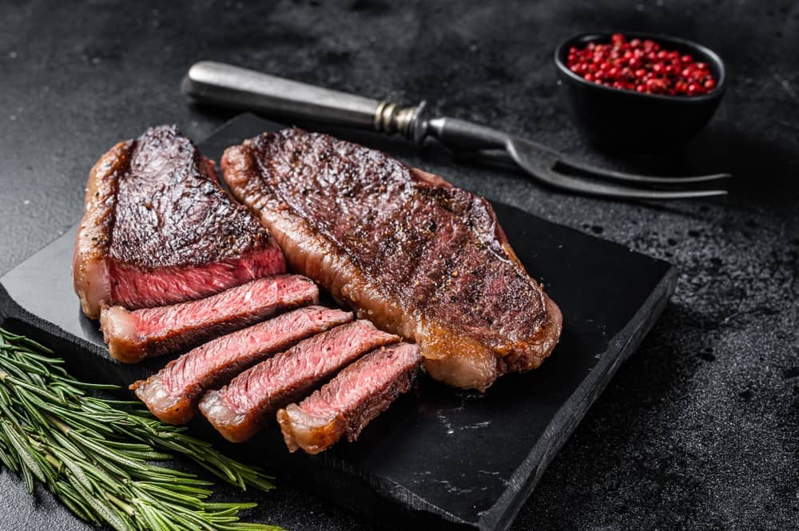

Sirloin Steak

How to cook a sirloin steak
Cooking times (for 2cm thick)
- Blue: 1 min each side
- Rare: 1½ mins per side
- Medium rare: 2 mins per side
- Medium: About 2¼ mins per side
- Well-done: About 4-5 mins each side
Steps
- (Optional) Salt your steak in advance – 2 hrs for every 1cm of thickness. This doesn't draw out the moisture, it gives the steak time to absorb the salt and become more evenly seasoned throughout.
- Bring the meat out of the fridge up to one hour before cooking so that it gets closer to room temperature.
- Season with pepper (and salt if ot previosuly) just before cooking.
- Heat a heavy-based frying pan until very hot but not smoking.
- Drizzle some (flavourless) oil into the pan and leave for a moment.
- Add the steak, a knob of butter, some garlic and robust herbs, if you want.
- Sear evenly on each side for our recommended time, turning every minute for the best caramelised crust.
- When you're happy, finish the steak off by rendering the fatty edge, holding the steak on its side between tongs for a couple of minutes. The fat will melt and add flavour.
- Leave to rest on a board or warm plate for about 5 mins.
- Serve the steak whole or carved into slices with the resting juices poured over.
- Enjoy :)